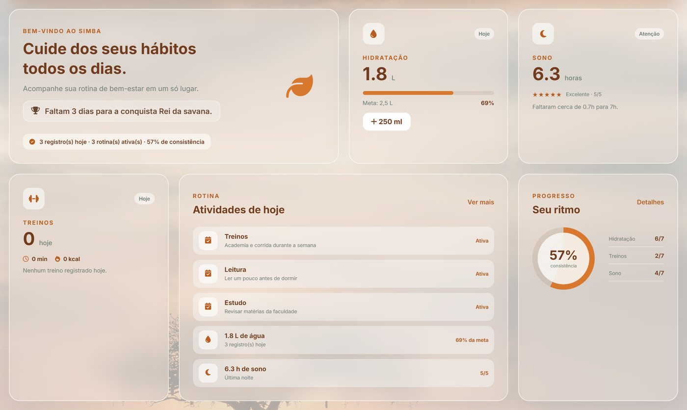
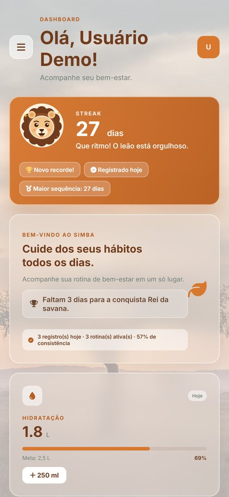
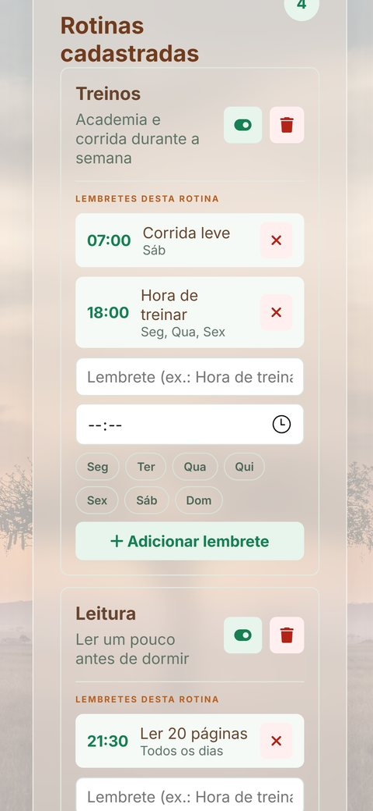
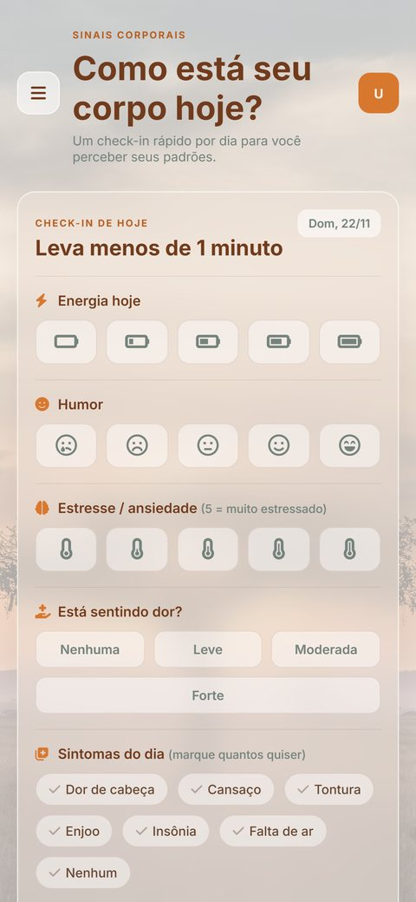
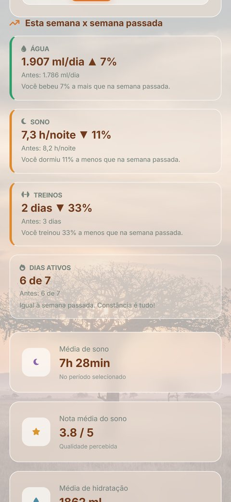
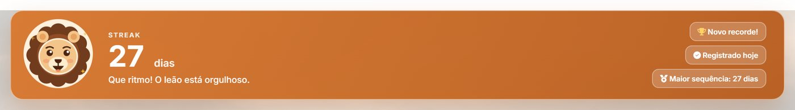
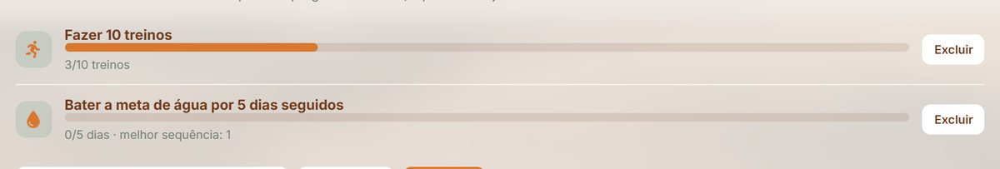
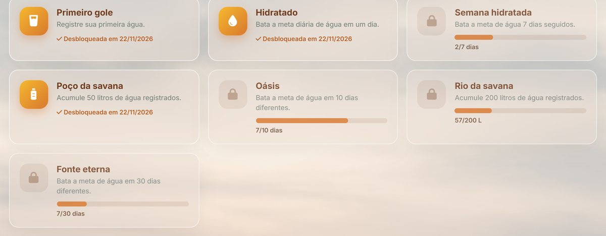

Tudo que cuida de você, num lugar só.
Água, sono, treinos, rotinas, lembretes e como seu corpo está hoje. O SIMBA junta essas ferramentas numa tela e ajuda você a manter uma rotina saudável, um dia de cada vez.
Sua saúde não cabe em cinco apps diferentes
Um app para a água, outro para o sono, uma planilha de treino, o despertador para lembrar e um bloco de notas para o resto. Com tudo separado, fica fácil perder o foco e desistir.
O SIMBA junta tudo numa tela só: 5 lugares → 1 app.
Cada uma cuida de uma parte. Juntas, cuidam de você.
- HidrataçãoUm toque por copo. A meta vem do seu peso.
- SonoHora de dormir, de acordar e uma nota para a noite.
- TreinosModalidade, minutos e calorias.
- Sinais corporaisEnergia, humor, estresse e dores em menos de 1 minuto.
- RotinasLembretes que se repetem nos dias que você escolhe.
- LembretesUm aviso na hora marcada.
- ProgressoGráficos e esta semana × semana passada.
- Conquistas e metas26 conquistas e desafios que você escolhe.

Do café da manhã à hora de dormir.
-
07:00

Acordou? O Simba mostra sua ofensiva e o que fazer hoje.
-
10:30
Um copo d'água. Um toque e a meta do dia sobe.
-
18:00

Hora de treinar. O lembrete da sua rotina avisa.
-
21:00

Como foi o dia? Energia, humor e estresse num check-in rápido.
-
22:00

Antes de dormir. Veja se esta semana foi melhor que a passada.
Todo leão começa pequeno.
Cada dia com pelo menos um registro soma um dia na sua ofensiva, e o Simba reage: fica feliz, animado e vira rei da savana aos 30 dias. Esqueceu um dia? A ofensiva fica em risco, mas não zera na hora.

- Dom
- Seg
- Ter
- Qua
- Qui
- Sex
- Sáb
- 0 dias
- Começando
- 1 a 6
- Feliz
- 7 a 29
- Animado
- 30 ou mais
- Rei da savana


Motivo para voltar amanhã.
- 26 conquistas que se desbloqueiam sozinhas
- Metas como "treinar 5 dias seguidos", acompanhadas pelo app
- Comparativo com a semana passada
- Um "próximo passo" sugerido todo dia
Amanhã o Simba te espera.
Crie sua conta e faça o primeiro registro hoje. Um copo d'água já conta, e no primeiro acesso o Simba mostra o caminho.